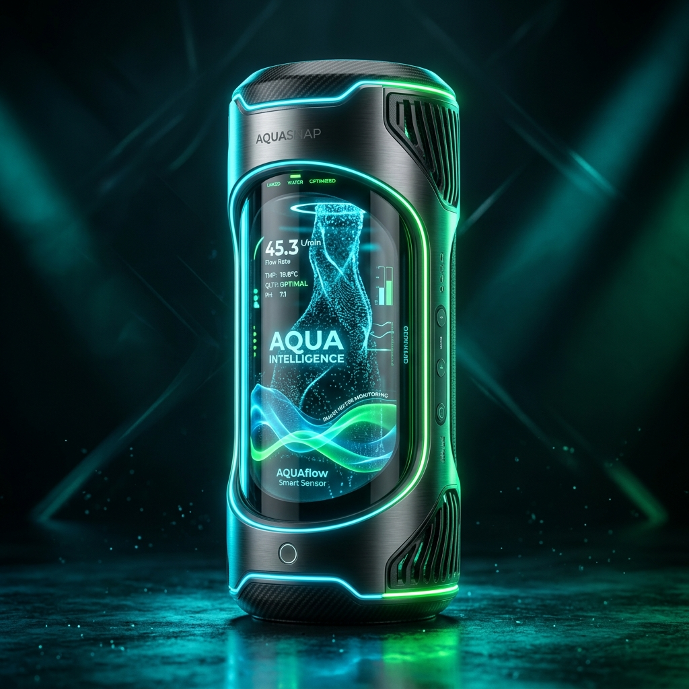

Reducimos hasta un 30% del desperdicio hídrico en España mediante sensores inteligentes, análisis en tiempo real y predicción avanzada con IA.

Sensores IoT con precisión nanométrica para cada tubería.
Escucha las fugas subterráneas antes de que afloren a la superficie.
Procesa miles de datos en tiempo real para optimizar el caudal.
Abordamos la crisis hídrica de España desde 3 frentes críticos con tecnología punta.
Localizamos fugas invisibles en tiempo real mediante análisis acústico y patrones de presión con precisión milimétrica.
Modelos de Deep Learning anticipan sequías y picos de consumo cruzando datos meteorológicos e históricos.
Automatizamos el bombeo y riego para reducir simultáneamente el desperdicio de agua y el gasto energético.
Resultados probados tras 12 meses de implementación
España sufre un 23.5% de pérdidas en red. Descubre los datos reales y por qué debemos actuar ahora.
Ver problema →Explora nuestro dashboard con estadísticas 2014-2024 del INE y MITECO sobre el estado hídrico.
Ver estadísticas →Únete a los municipios y empresas agrícolas que ya ahorran millones de litros.
Empezar ahora →